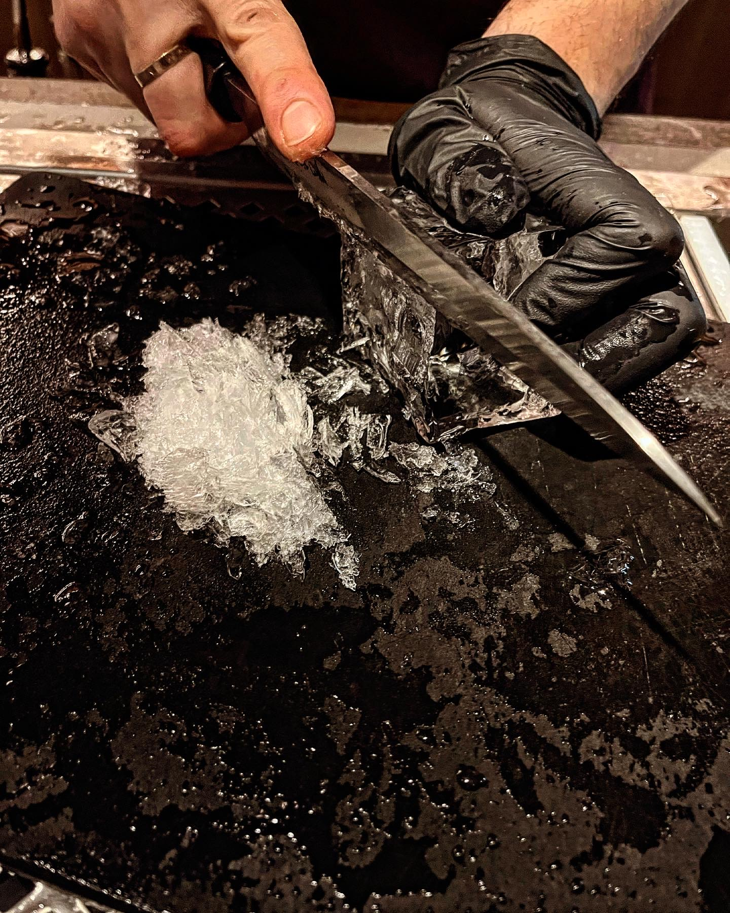

Το παλιό μας στέκι επιστρέφει πιο ανανεωμένο από ποτέ και μας ξανά συστήνεται ως ένα από ομορφότερα bar restaurant της πόλης.
Κοκτέιλ και φαγητό to share από άλλο πλανήτη.

Ατμόσφαιρα:
Το εντυπωσιακό μπαρ είναι το πρώτο που μας κίνησε το ενδιαφέρον και δεν ξέραμε ακόμα τι εκπλήξεις μας επιφύλασσε…
Η ατμόσφαιρα σαν να βγήκε από ταινία σε ένα χώρο χτισμένο από βυνίλ, αλκοόλ και μεθυστικά αρώματα.
Είναι ακριβώς αυτό το μαγαζί που ψάχνεις όταν θες ένα ωραίο κοκτειλάκι αλλά να μην το πιούμε και σκέτο να μας πειράξει αλλά να μην είναι και εντελώς «εστιατόριο» βρε παιδί μου…ξέρετε τι εννοούμε.
Εξυπηρέτηση:
Κάθε φορά θα επιμένουμε ότι η εξυπηρέτηση είναι το νούμερο ένα, και ένα τόσο φιλόξενο και ευχάριστο κλίμα μας επιβεβαιώνει συνεχώς αυτόν τον κανόνα.
Όλα τα άτομα στο προσωπικό ήταν εξαιρετικά και έδιναν το κάτι παραπάνω στην εμπειρία μας. Και σε αυτό το σημείο θα θέλαμε να πούμε και ένα ιδιαίτερο ευχαριστώ στον Σωτήρη που επιμελήθηκε τα κοκτέιλ μας και ήταν πραγματικά υπέροχα.
To Start With:
Είπαμε να ξεκινήσουμε με ένα κοκτέιλ μέχρι να διαλέξουμε τι θα παραγγείλουμε αλλά αυτό τελικά δεν ήταν η πιο εύκολη επιλογή.
Μέχρι που είδαμε στον κατάλογο την επιλογή «off the book» και είναι ακριβώς αυτό που καταλάβετε.
Υπάρχει η δυνατότητα και για μας τους αναποφάσιστους να περιγράψουμε τις γεύσεις που επιθυμούμε ή τη βάση του κοκτέιλ που θέλουμε και ο barman να μας φτιάξει μια μοναδική συνταγή βάσει των δικών μας προσωπικών προτιμήσεων.
Αυτό βέβαια έχει και ένα κακό… αν σου αρέσει πολύ δεν μπορείς να πιεις δεύτερη φορά το ίδιο καθώς..δεν υπάρχει συνταγή!
Παραγγείλαμε λοιπόν τα κοκτέιλ μας όταν είδαμε τον barman να τοποθετεί ένα τεράστιο κομμάτι πάγου πάνω στον πάγκο και να αρχίσει να του δίνει σχήμα και μορφή μέχρι που έγινε ένας κύβος και δρόσισε το ποτό μας.
Και ενώ τα κοκτέιλ αυτού του μαγαζιού είναι από μόνα τους ένας καλός λόγος για να το επισκεφτείς σίγουρα δεν γίνεται να αγνοήσεις το μενού του.

-
Το πιο νόστιμο καλωσόρισμα: Αγγινάρες Ιερουσαλήμ
Δεν μπορούμε να διανοηθούμε το ποσό νόστιμη ήταν αυτή η μπουκίτσα. Δεν θέλαμε να δοκιμάσουμε τίποτα άλλο για να μην αλλάξει αυτή τη γεύση. Το μαγαζί έβαλε πολύ ψηλά τον πήχη με αυτή την έναρξη.
-
House Goat Cheese:
Σταφύλι, τρούφα, χειροποίητο προζυμένιο crostini
Το τέλειο συνοδευτικό για το κρασί. Τα πάντα είναι χειροποίητα και προσεγμένα από την αρχή μέχρι το τέλος
-
Panzanella
Παντζάρι και ντοματίνι, ραντίτσιο και μοτσαρέλα burrata
Ακούγεται κλασικό; Και μείς έτσι νόμιζα μέχρι να μάθουμε ποσό νόστιμη μπορεί να είναι μια σαλάτα
-
Cod Beignet
Κρέμα πέστο, yuzu crème fraîche
Ή αλλιώς…ο πιο νόστιμος ψαρολουκουμάς
Tip: κρατήστε ψωμάκι για μακροβούτι στο pesto

-
Tortellini
Ricotta και μανιτάρι, παρμεζάνα ωρίμανσης και φουντούκι
Χρειάζεται να προσθέσουμε κάτι; Ε δεν νομίζω…
-
Αρνί
Χόρτα, dashi, αφρός παρμεζάνας
Ένα πιάτο παραδόξως αρκετά ελαφρύ στη γεύση που αφήνει την αίσθηση του καπνιστού ενώ το αρνί είναι διακριτό αλλά και διακριτικό συγχρόνως.

Τελικές σκέψεις:
Είναι αυτό ακριβώς που χρειάζεσαι μετά από μια δύσκολη μέρα.
Side-notes
Όταν θες μια ωραία ατμόσφαιρα, ένα χαλαρό βράδυ που θα γεμίσει τις αισθήσεις σου και θα σε κάνει να νιώθεις ξεκούραση.
Αν θέλεις να δείς περισσότερο υλικό για την Κόκκινη Σβούρα, ρώτησε μας
ή δες εδώ!